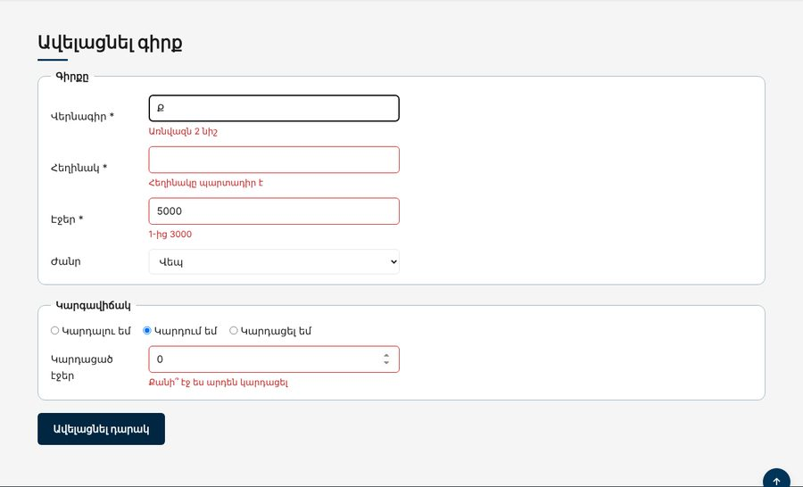

Տնային աշխատանք · JS Դաս 13 · մինի-նախագիծ
Անին ավելացնում է գրքեր ֆորմայով։ Ամեն դաշտ ստուգվում է, սխալները՝ դաշտի տակ, կարգավիճակից կախված «Կարդացած էջեր» դաշտը ստուգվում է այլ կերպ։ Կոդը բաժանվում է երեք ֆայլի։
Դաս 01–13․ value, checked, submit, FormData, Object.fromEntries, կանոնների օբյեկտ, blur որսման փուլով, regex։

Աշխատիր քո կայքում (կամ նախորդ դասի օրինակում)։ CSS-ը տրված է, որ կենտրոնանաս JS-ի վրա․ HTML/CSS-ը արդեն գիտես։
starter/css/books-13.css — CSS-ը, որ ավելանում է այս դասինstarter/pages/books.html — «Գրքեր» էջի markup-ը (JS չկա, միայն <script>-ները)data.js՝ զանգվածը և հաստատունները, books.js՝ դարակը, form.js՝ ֆորմանaddBook(...)-ը, որը ապրում է books.js-ում""read(value) {
const status = form.querySelector('input[name="status"]:checked').value;
if (status !== "reading") return "";
const n = Number(value);
const pages = Number(form.pages.value);
if (!Number.isInteger(n) || n < 1) return "Քանի՞ էջ ես արդեն կարդացել";
if (pages && n >= pages) return `Պիտի լինի ${pages}-ից քիչ`;
return "";
}blur՝ դաշտից դուրս գալիս (երրորդ արգումենտը՝ true)input՝ սխալը վերանում է ուղղելիսchange)preventDefault, բոլոր դաշտերը՝ map(validateField).every(...), ֆոկուս առաջին սխալի վրաFormData → օբյեկտ → կարդացած էջերը ըստ կարգավիճակի → addBook → form.reset()| Սխալ | Ինչպես ուղղել |
|---|---|
| Սխալը հայտնվում է առաջին տառից | Ցույց տուր blur-ով, իսկ input-ով միայն հանիր |
blur-ը չի աշխատում ֆորմայի վրա | blur-ը չի փուչիկանում․ addEventListener("blur", fn, true) |
| Էջը վերաբեռնվում է | e.preventDefault() |
| Նոր գրքի էջերը «448» տող են | FormData-ի արժեքները տողեր են․ Number() |
Սրանք Դաս 13-ի տնային աշխատանքի կետերն են։ «մինի-նախագծում» նշվածները արդեն կատարել ես վերևի քայլերում, մնացածը կատարիր առանձին ֆայլերում։
input-ով ցույց տուր մուտքագրվածը իրական ժամանակում և նիշերի քանակը։type-ը դառնա text, հանելիս՝ նորից password։validators.js ֆայլ՝ isEmpty, minLength, isEmail, isPhone, isNumber, inRange ֆունկցիաներով։ Ամեն մեկը ստուգիր 3 արժեքով։textarea, առնվազն 10 նիշ)։ Սխալները ցույց տուր դաշտի տակ։classList-ով)։Երբ բաժին 03-ի բոլոր կետերը նշված են, բացիր օրինակը և դրա կոդը example/js/-ում։ Գտիր մեկ բան, որ դու արել ես այլ կերպ, և մտածիր՝ որն է ավելի հասկանալի և ինչու։ Քո լուծումը կարող է տարբերվել և լինել ճիշտ։